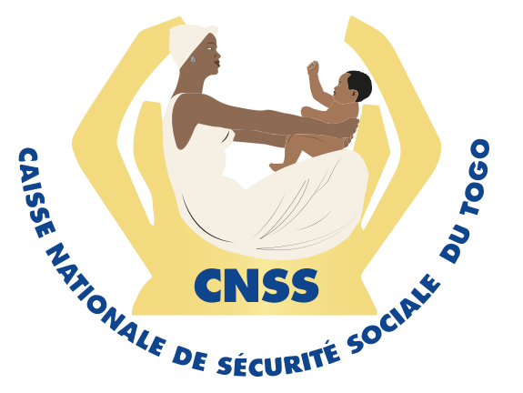

Designed to educate, inform, and facilitate the active participation of the population in Universal Health Coverage (Assurance Maladie Universelle) in Togo.

Ask-AMU is a virtual assistant available on major social media platforms such as WhatsApp, Telegram, and TikTok.
Designed to educate, inform, and facilitate the active participation of the population in Universal Health Coverage (Assurance Maladie Universelle) in Togo.
This conversational agent helps users identify their health insurance plan, determine the associated managing organization, and clearly understand their financial contribution.
